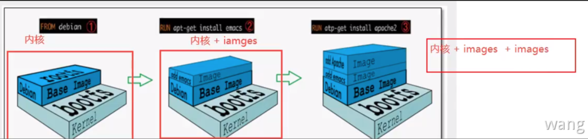
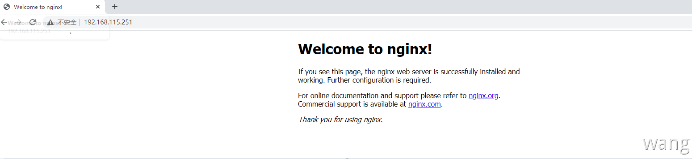
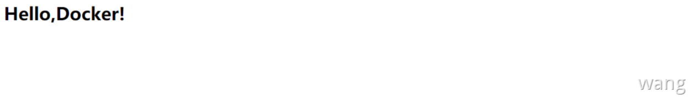

镜像概念
镜像是一种轻量级、可执行的独立软件包，用来打包软件运行环境和基于运行环境开发的软件，包含运行软件所需的所有内容，包括代码、运行时、库、环境变量和配置文件，Docker 运行容器前需要本地存在对应的镜像，如果本地不存在会从镜像仓库下载该镜像。
操作系统分为内核和用户空间。对于 Linux 而言，内核启动后，会挂载
root文件系统为其提供用户空间支持。而 Docker 镜像（Image），就相当于是一个 root 文件系统。比如官方镜像 ubuntu:18.04 就包含了完整的一套 Ubuntu 18.04 最小系统的 root 文件系统
镜像来源
- 远程仓库下载
- 拷贝
- 自己制作镜像(
Dockerfile)
获取镜像
Docker Hub 上有大量高质量的镜像可以用，获取镜像的命令是 docker pull，格式为：
1 | docker pull [选项] [Docker Registry 地址[:端口号]/]仓库名[:标签] |
具体选项可以通过 docker pull --help 命令看到，镜像名称格式如下：
- Docker 镜像仓库地址：地址格式一般是
<域名/IP>[:端口号]。默认地址是 Docker Hub - 仓库名：这里的仓库名是两段式名称，即
<用户名>/<软件名>。对于 Docker Hub，如果不给出用户名，则默认为library，也就是官方镜像
比如：
1 | [root@wangpengliang ~]# docker pull redis:6.2.4 |
上面的命令中没有给出 Docker 镜像仓库地址，因此将会从 Docker Hub 获取镜像。而镜像名称是 redis:6.2.4，因此将会获取官方镜像 library/redis仓库中标签为 6.2.4 的镜像。
从下载过程中可以看到分层存储的概念，镜像是由多层存储所构成。下载也是一层层的去下载，并非单一文件下载。过程中给出了每一层的 ID 的前 12 位。下载结束后，给出该镜像完整的 sha256 的摘要以确保下载一致性。
镜像列表
镜像下载完成后可以使用 docker image ls 查看本地镜像列表
1 | [root@wangpengliang ~]# docker image ls |
列表包含了 仓库名、标签、镜像 ID、创建时间以及所占用的空间，镜像 ID 是镜像的唯一标识，一个镜像可以对应多个标签。
镜像体积
仔细观察会注意到上面标识的所占用空间和在 Docker Hub 上看到的镜像大小不同。比如，redis:6.2.4 镜像大小，在这里是 105 MB，但是在 Docker Hub 显示的却是 37 MB。这是因为 Docker Hub 中显示的体积是压缩后的体积。在镜像下载和上传过程中镜像是保持着压缩状态的，因此 Docker Hub 所显示的大小是网络传输中更关心的流量大小。而 docker image ls 显示的是镜像下载到本地后，展开的大小。准确说，是展开后的各层所占空间的总和，因为镜像到本地查看空间的时候，更关心的是本地磁盘空间占用的大小。
另外一个需要注意的问题是，docker image ls 列表中的镜像体积总和并非是所有镜像实际硬盘消耗。由于 Docker 镜像是多层存储结构，并且可以继承、复用，因此不同镜像可能会因为使用相同的基础镜像，从而拥有共同的层。由于 Docker 使用 UNION FS，相同的层只需要保存一份即可。因此实际镜像硬盘占用空间很可能要比这个列表镜像大小的总和要小。
通过以下命令可以查看镜像、容器、数据卷所占用的空间：
1 | [root@wangpengliang ~]# docker system df |
虚悬镜像
有时候可以看到这种特殊的镜像，仓库名和标签均为 <none>
1 | <none> <none> 00285df0df87 5 days ago 342 MB |
这个镜像原本是有镜像名和标签的，比如原来为 mongo:3.2，随着官方镜像维护，发布了新版本后，重新 docker pull mongo:3.2 时，mongo:3.2 这个镜像名被转移到了新下载的镜像身上，而旧的镜像上的这个名称则被取消，从而成为了 <none>。除了 docker pull 可能导致这种情况，docker build 也同样可以导致这种现象。由于新旧镜像同名，旧镜像名称被取消，从而出现仓库名、标签均为 <none> 的镜像。这类无标签镜像也被称为 虚悬镜像(dangling image) 。
通过以下命令可以查看这类镜像：
1 | docker image ls -f dangling=true |
一般来说虚悬镜像已经失去了存在的价值，是可以随意删除的。
通过以下命令删除：
1 | docker image prune |
中间层镜像
为了加速镜像构建、重复利用资源，Docker 会利用 中间层镜像。所以在使用一段时间后，可能会看到一些依赖的中间层镜像。默认的 docker image ls 列表中只会显示顶层镜像，如果希望显示包括中间层镜像在内的所有镜像的话，需要加 -a 参数。
1 | docker image ls -a |
这样会看到很多无标签的镜像，这些无标签的镜像很多都是中间层镜像，是其它镜像所依赖的镜像。这些无标签镜像不应该删除，否则会导致上层镜像因为依赖丢失而出错。实际上，这些镜像也没必要删除，因为之前说过，相同的层只会存一遍，而这些镜像是别的镜像的依赖，因此并不会因为它们被列出来而多存了一份，只要删除依赖它们的镜像后，这些被依赖的中间层镜像也会被连带删除。
列出部分镜像
不加任何参数的情况下，docker image ls 会列出所有顶层镜像，但有时候只希望列出部分镜像。docker image ls 有几个参数可以帮助做到
根据仓库名列出镜像：
1 | [root@wangpengliang ~]# docker image ls redis |
指定仓库名和标签：
1 | [root@wangpengliang ~]# docker image ls redis:6.2.4 |
除此以外，docker image ls 还支持过滤器参数 --filter或者简写 -f。
只显示镜像ID -q：
1 | [root@wangpengliang ~]# docker image ls -q |
格式化显示镜像结果：
1 | [root@wangpengliang ~]# docker image ls --format "{{.ID}}: {{.Repository}}" |
只包含镜像ID和仓库名。
删除镜像
如果要删除本地镜像，可以使用 docker image rm 命令，格式为：
1 | $ docker image rm [选项] <镜像1> [<镜像2> ...] #<镜像> 可以是 镜像短 ID、镜像长 ID、镜像名 或者 镜像摘要 |
或者使用
1 | dcoker rmi <镜像> |
1 | [root@wangpengliang ~]# docker image ls |
运行容器
上面了解了关于镜像的一些基础知识，有了镜像就能够以这个镜像为基础启动并运行一个容器。以 Redis 为例
1 | [root@wangpengliang ~]# docker run -it --name redis -d redis:6.2.4 |
UnionFS
- 联合文件系统是一种分层、轻量级并且高性能的文件系统，支持对文件系统的修改，作为一次提交来一层层的叠加，同时可以将不同目录挂载到同一个虚拟文件系统下（unite directories into a single virtual filesystem）
- UnionFS是Docker镜像的基础，镜像可以通过分层来继承，基于基础镜像（没有父镜像的镜像），可以制作各种具体的应用镜像
- 特性一次同时加载多个文件系统，但从外面看起来只能看到一个文件系统，联合加载会把各层文件系统叠加起来，这样最终的文件系统会包含所有底层的文件和目录
- Docker的镜像实际上由一层一层的文件系统组成，这种层级的文件系统叫UnionFS
- BootFS（Boot file system）主要包含 bootloader 和 kernel，bootloader 主要是引导加载 kernel，Linux 刚启动时会加载 BootFS文件系统，在 Docker 镜像的最底层是 BootFS。这一层与典型的 Linux/Unix 系统是一样的，包含 boot 加载器和内核。当 boot 加载完成之后整个内核就都在内存中了，此时内存的使用权已由 BootFS 转交给内核，此时系统也会卸载 BootFS
- RootFS（Root File System），在 BootFS 之上，包含的就是典型 Linux 系统中的 /dev，/proc，/bin，/etc 等标准目录和文件。RootFS就是各种不同的操作系统发行版，比如 Ubuntu CentOS 等

比如：mysql 和 tomcat 都需要 centos 环境，先安装 mysql 就有了 centos 的环境，再安装 tomcat 时就可以共用这一层 centos ，不需要再下载 centos
Commit 镜像
镜像是容器的基础，每次执行 docker run 的时候都会指定哪个镜像作为容器运行的基础。之前例子中一直使用来自于 Docker Hub 的镜像。直接使用这些镜像是可以满足一定的需求，而当这些镜像无法直接满足需求时，就需要定制镜像。
镜像是多层存储，每一层是在前一层的基础上进行的修改。容器同样也是多层存储，以镜像为基础层，在其基础上加一层作为容器运行时的存储层。
以定制一个 Web 服务器为例，来了解镜像是如何构建的：
1 | docker run --name webserver -d -p 80:80 nginx |
使用 nginx 镜像启动一个容器，命名为 webserver并且映射 80 端口，然后浏览器去访问这个服务器会看到默认的 nginx 欢迎页面。

现在将"Welcome to nginx!" 改成 “Welcome to Docker!”，通过 docker cp 将容器内文件拷贝出来修改后再放回去。
1 | [root@wangpengliang home]# docker cp 470e01aed950:/usr/share/nginx/html/index.html /home/ |
这里也可以使用 docker exec 进入到容器内进行修改，不过因为容器内并没安装
vi，还需额外安装就懒得折腾了
现在刷新浏览器的话，会发现内容改变了。

上面修改了容器的文件，也就是改动了容器的存储层。可以通过 docker diff 命令看到具体的改动
1 | [root@wangpengliang home]# docker diff webserver |
当运行一个容器时（如果不使用卷），做的任何文件修改都会被记录于容器存储层里。而 Docker 提供了一个 docker commit 命令，可以将容器的存储层保存下来成为镜像。换句话说就是在原有镜像的基础上再叠加上容器的存储层，并构成新的镜像。以后运行这个新镜像时，就会拥有原有容器最后的文件变化。
1 | docker commit [选项] <容器ID或容器名> [<仓库名>[:<标签>]] |
1 | docker commit -m="提交的描述信息" -a="作者" 容器id 目标镜像名[tag] |
1 | [root@wangpengliang ~]# docker commit -m='nginx2.0' -a='wangpengliang' 470e01aed950 nginx:2.0 |
使用 docker history 可以具体查看镜像内的历史记录，如果比较 nginx:latest 的历史记录，会发现新增了刚刚提交的这一层：
1 | [root@wangpengliang ~]# docker history nginx:2.0 |
新的镜像定制好后，运行这个镜像。
1 | docker run --name webserver2 -d -p 81:80 nginx:2.0 |
这里命名为新的服务为 webserver2 ，并且映射到 81 端口。看到结果内容和之前修改后的 webserver 一样
慎用Commit镜像
docker commit 命令虽然可以比较直观的帮助理解镜像分层存储的概念，但是实际环境中并不推荐这么用，原因有如下几点：
问题一：
仔细观察之前的 docker diff webserver 的结果，会发现除了真正想要修改的 /usr/share/nginx/html/index.html 文件外，由于命令的执行还有很多文件被改动或添加了。这还仅仅是最简单的操作，如果是安装软件包、编译构建那会有大量的无关内容被添加进来。如果不清理干净，将导致镜像极为臃肿。
问题二：
使用 docker commit 意味着所有对镜像的操作都是黑箱操作，生成的镜像也被称为黑箱镜像，除了制作镜像的人知道执行过什么命令、怎么生成的镜像，别人根本无从得知。而且，即使是这个制作镜像的人，过一段时间后也无法记清具体操作。虽然 docker diff 或许可以得到一些线索，但是远远不到可以确保生成一致镜像的地步。这种黑箱镜像将导致维护工作非常痛苦。
问题三：
镜像所使用的分层存储的概念是除当前层外，之前的每一层都是不会发生改变的，换句话说，任何修改的结果仅仅是在当前层进行标记、添加、修改，而不会改动上一层。如果使用 docker commit 制作镜像以及后期修改的话，每一次修改都会让镜像更加臃肿一次，所删除的上一层的东西并不会丢失，会一直如影随形的跟着这个镜像，即使根本无法访问到。这也会让镜像更加臃肿。
DockerFile简单示例
根据之前的 docker commit 了解到镜像的定制实际上就是定制每一层所添加的配置、文件。如果可以把每一层修改、安装、构建、操作的命令都写入一个脚本，用这个脚本来构建、定制镜像，那么之前提及的无法重复的问题、镜像构建透明性的问题、体积的问题就都会解决。这个脚本就是Dockerfile 。
Dockerfile 是一个文本文件，其内包含了一条条的指令(Instruction)，每一条指令构建一层，因此每一条指令的内容，就是描述该层应当如何构建。了解了 Dockerfile 如何构建镜像后，以 nginx 举例来构建这个镜像。
在空白目录中建立文件命名为 Dockerfile：
1 | mkdir mynginx |
编写内容：
1 | FROM nginx |
使用 docker build 命令依赖 Dockerfile文件生成镜像：（注意：最后有个. 这是必须的）
1 | [root@wangpengliang ~]# docker build -t nginx:3.0 . |
查看构建好的镜像：
1 | [root@wangpengliang ~]# docker image ls |
运行 nginx:3.0 镜像测试：
1 | docker run --name webserver3 -d -p 82:80 nginx:3.0 |

其他 Docker Build 用法
Git repo 构建
docker build 支持从 URL 构建，比如可以直接从 Git repo 中构建：
1 | $ docker build https://github.com/twang2218/gitlab-ce-zh.git#:11.1 |
这里指定了构建所需的 git repo ，并且指定默认的 master 分支，构建目录为 /11.1/，然后 Docker 就会去 git clone 这个项目、切换到指定分支、并进入到指定目录后开始构建。
tar 压缩包构建
1 | $ docker build http://server/context.tar.gz |
如果给出的 URL 不是个 Git repo ，而是个 tar 压缩包，那么 Docker 引擎会下载这个包，并自动解压缩，以其作为上下文，开始构建。
读取 Dockerfile 构建
1 | docker build -<Dockerfile |
如果标准输入传入的是文本文件，则将其视为 Dockerfile，并开始构建。这种形式由于直接从标准输入中读取 Dockerfile 的内容，它没有上下文，因此不可以像其他方法那样可以将本地文件 COPY 到镜像之类的事情。
读取上下文压缩包构建
1 | $ docker build -< context.tar.gz |
如果发现标准输入的文件格式是 gzip、bzip2 以及 xz 的话，将会使其为上下文压缩包，直接将其展开，将里面视为上下文，并开始构建。